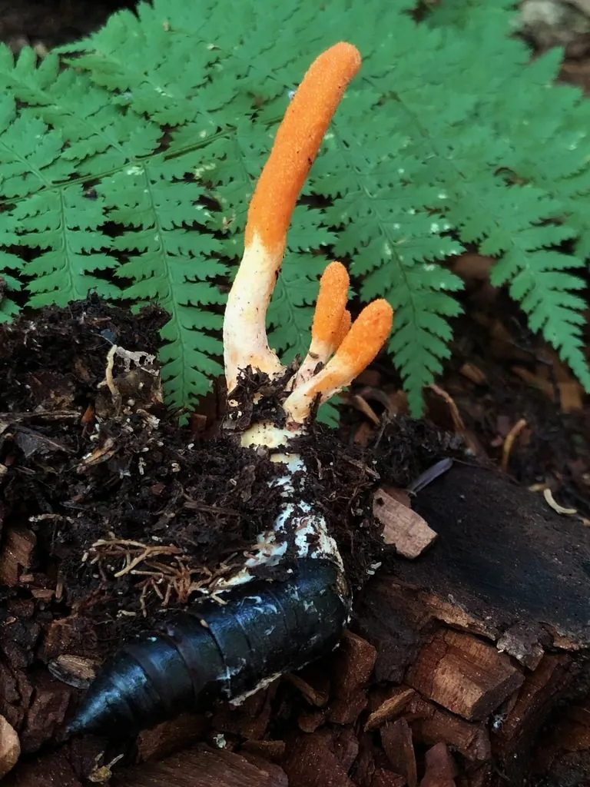

真菌 · 真菌界
蛹虫草 Cordyceps militaris

寄生在蛹或幼虫体内的虫草真菌，橙红色棒状子座从虫体上长出，可人工栽培，是冬虫夏草的近缘种。
- 分类
- 门子囊菌门纲粪壳菌纲目肉座菌目科虫草科属虫草属
- 栖息环境
- 针叶林和阔叶林的林下土壤，寄生于鳞翅目昆虫的蛹或幼虫
- 地理分布
- 日本、朝鲜半岛和中国东北、华北、西南等地有分布和栽培
- 保护级别
- 暂无评估（IUCN 未评估，可人工栽培）
物种志
蛹虫草是子囊菌门肉座菌目的虫生真菌，由虫体和子座两部分组成。子座呈棒状或匙状，长 3–8 cm，橙红色至橙黄色，表面密生细小的子囊壳，顶端稍膨大；被寄生的蛹或幼虫尸体埋在土中或树皮缝隙里，内部被菌丝充满。孢子成熟后散出，感染新的宿主。
蛹虫草多生于针叶林和阔叶林的林下土壤中，寄生于鳞翅目昆虫的蛹或幼虫，在东亚的日本、朝鲜半岛和中国东北、华北、西南等地有分布。它是冬虫夏草的近缘种，同样具有药用价值，含有虫草素等成分，现已有成熟的人工栽培技术，可用大米、蚕蛹等培养基培养。蛹虫草可炖汤或泡酒，但不宜过量食用，野生虫草采挖要注意保护生态。
形态与习性
- 子座棒状或匙状，长 3–8 cm，橙红色
- 虫体被寄生的蛹或幼虫，内部充满菌丝
- 寄生寄生于鳞翅目昆虫的蛹或幼虫
- 成分含虫草素等活性成分
- 栽培用大米、蚕蛹等培养基人工栽培
- 采收期子座成熟、孢子尚未大量散落时
- 食用性可炖汤或泡酒，不宜过量
趣味知识
- 蛹虫草的子座呈橙红色棒状，从被寄生的虫蛹上长出。
- 它是冬虫夏草的近缘种，也含有虫草素等成分。
- 蛹虫草已能人工栽培，用大米和蚕蛹等作为培养基。
- 野生虫草资源有限，采挖要注意保护生态。